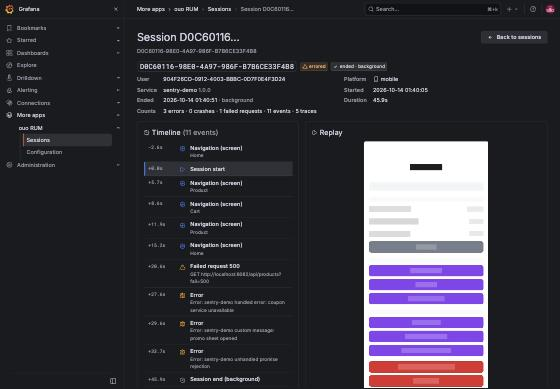
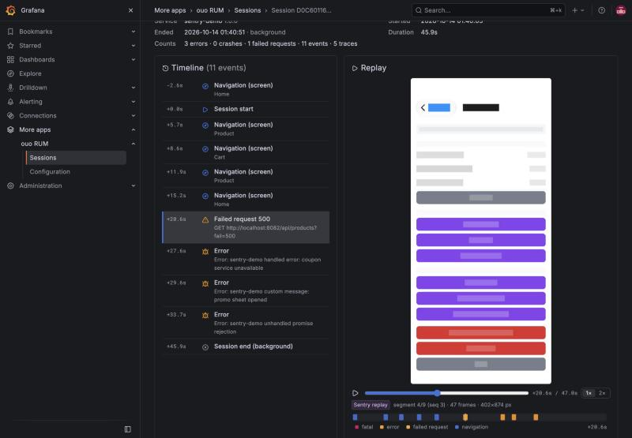
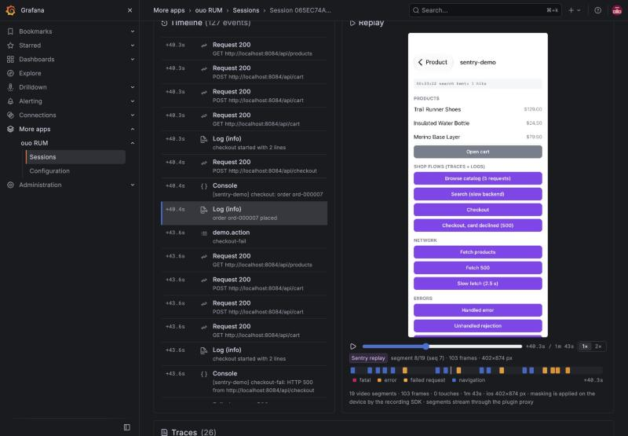
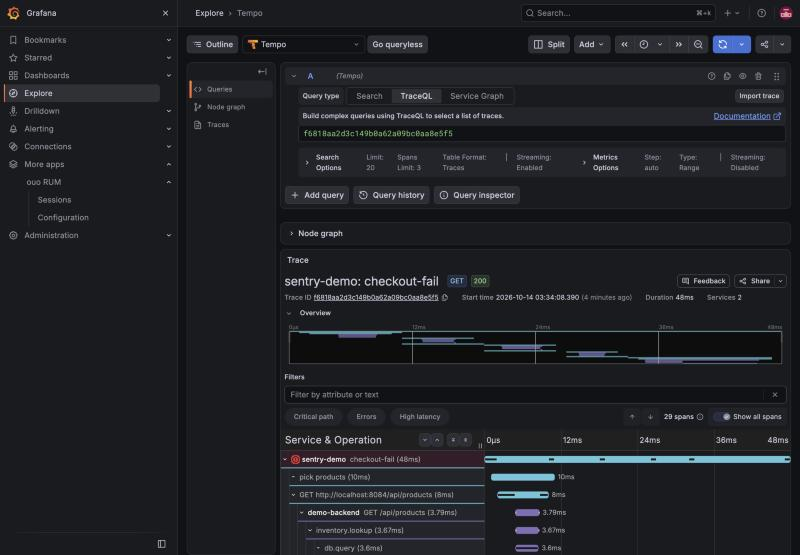
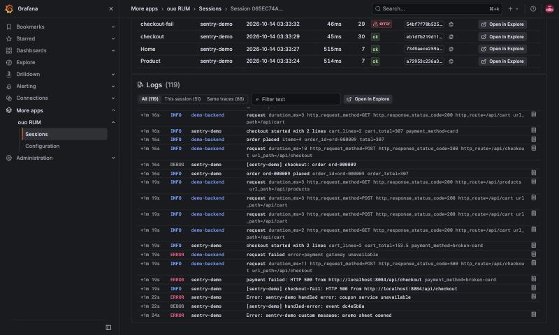
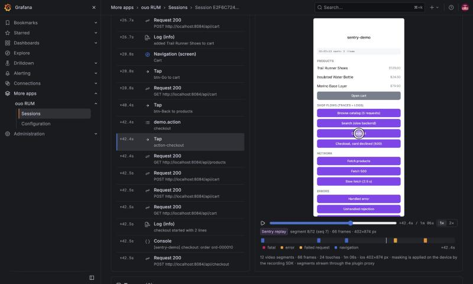

Sentry bridge verification
ADR-0008, branch claude/sentry-bridge-design, 2026-10-14. Real traffic from @sentry/react-native 8.30.0 (sentry-cocoa 9.30.1) on the iOS 27 simulator, through the ouo-collector in an isolated compose project ouo-sb.
Architecture under test
Sub-phase gates
| Sub-phase | Gate | Result | Evidence |
|---|---|---|---|
| S1 Transparent forward | every request byte-identical at Sentry; status, rate-limit headers and body back unchanged; Sentry down looks like Sentry down | pass | Go tests (fake upstream, 7 response cases, auth, limits); live: 39/39 real requests, 429 with X-Sentry-Rate-Limits + Retry-After unchanged through the container, unreachable upstream aborts the connection (curl exit 52), outage run below |
| S2 Telemetry to LGTM | sessions with the right status and end in rum-api, every error in Loki, every transaction in Tempo with session.id | pass | verify-bridge.py: 6 sessions, 8 errors, 11 transactions across both runs; golden tests on 54 captured requests |
| S3 Replay to rum-api | every segment stored in the right session, byte-identical, playable | pass | 26 segments, 6 replays: sha256 equal to the SDK's mp4, AVFoundation decodes all at 402x874; Range 206 |
| S4 Plugin player | bridged session plays in Grafana with timeline seek | pass | screenshots below; plugin agent report agents/grafana-plugin/reports/s4-video-player.html |
| S5 Android | deferred | founder decision; no Android tooling on the build Mac |
S1: as if the collector were not there
Tap A sits in front of the bridge and records exactly what the SDK sent and what it got back; tap B plays Sentry and records what it received and answered. sentrytap compare A B matches every request by method, path, query and body sha256, then compares Content-Type, Content-Encoding, Content-Length, X-Sentry-Auth, User-Agent, the response status and body, X-Sentry-Rate-Limits and Retry-After.
journey (cold start, 3 screens, fetch ok/500/slow, handled error, message, unhandled rejection,
40 s background, JS fatal, native crash, relaunches)
requests before bridge: 39, at upstream: 39, matched byte-identical: 39, extra at upstream: 0, problems: 0
item types: 16 replay_video, 12 transaction, 10 session, 5 event, 4 client_report
all requests: gzip, application/x-sentry-envelope, X-Sentry-Auth header, User-Agent sentry.cocoa.react-native/9.30.1
bridge overhead (tap A round trip minus Sentry time), n=39: p50 2.8 ms, p95 4.4 ms, max 9.1 ms
The bridge adds X-Forwarded-For so Sentry keeps the device IP instead of the bridge's (the same header Sentry's tunnel docs ask for); it never adds Accept-Encoding and never decompresses Sentry's answer.
S2 and S3: what ouo recorded, checked against the raw envelopes
examples/sentry-mobile/scripts/verify-bridge.py derives the expected sessions, errors, transactions and replays from tap A's raw envelopes on its own and compares them with rum-api, Loki, Tempo and the replay store; every mp4 is downloaded from rum-api and decoded with AVFoundation.
| Session (journey run) | Sentry said | rum-api | Replay |
|---|---|---|---|
D0C60116 | 3 errors, exited | errored, ended background, 1 failed request, 5 traces | 9/9 segments, 47 s |
FE2E0123 | JS fatal, crashed | crashed, ended crash | 2/2 segments |
30E0D27C | native EXC_BAD_ACCESS, crashed on next launch | crashed, ended crash at the crash time | 2/2 segments |
8BD4E3D1 | ok (process killed at the end) | healthy, active | 3/3 segments |
PASS every Sentry error event is an exception record in Loki (5 in Loki, 5 sent) PASS fatal events are fatal in Loki (2 fatal) PASS every Sentry transaction is a trace in Tempo with session.id on all spans (9/9) PASS every served mp4 is byte-identical to the mp4 the SDK sent (sha256) (16 segments, 0 mismatches) PASS every segment decodes as H.264 video at the manifest's viewport size (AVFoundation) (16/16 decoded) 25/25 checks passed
Raw results: verify-journey.json, verify-outage.json.
Sentry outage with the real SDK
Tap B (Sentry) stopped; the app launched, raised a handled error, a message and an unhandled rejection, and recorded replay. The bridge aborted each connection, so sentry-cocoa did what it does when Sentry is down: it retried the first envelope 10 times with backoff and kept everything else on disk. Sentry restarted, app relaunched: the SDK flushed the cached envelopes within a second.
requests before bridge: 29, at upstream: 19, matched byte-identical: 19, dropped while upstream down: 10, extra at upstream: 0, problems: 0 dropped and later re-delivered: 1 of 1 distinct item; never re-delivered: none 15/15 checks passed; exception records per Sentry event id over the last hour: max 1 (9 events)
The bridge translates an envelope only after Sentry accepted it, so a retry after a failure is not double counted in ouo.
Grafana


Follow-ups: logs, richer timeline, joined traces, unmasked replay
Founder request after S4: Sentry logs into Loki, many traces that reach the backend with "Open in Explore" working, unmasked recordings, and a fuller timeline. The demo app now enables enableLogs and propagateTraceparent, turns masking off (demo only), and has four manually instrumented flows (browse catalog, search products, checkout, checkout-fail), each in its own trace (startNewTrace). Run: journey.sh --shop-rounds 3, 79 requests.
| Item | Gate | Result | Evidence |
|---|---|---|---|
| F1 Sentry logs to Loki | every Sentry.logger entry is a log session event, typed attributes, in the right session | pass | 30/30 in Loki, 51/51 log and console records with a session (50 by the sentry.replay_id attribute, 1 by trace id); unit tests for trace, device, hold, expiry and sessions sharing a trace id |
| F2 Richer timeline | replay breadcrumbs become timeline events, no duplicates | pass | 45/45 answered fetches as http.request; console output once per line (20 log entries + 18 breadcrumbs = 21 lines); 127 timeline events in the main session: 42 requests, 29 logs, 19 console lines, 16 breadcrumbs, 1 app lifecycle, and the 20 of the types that existed before (11 navigations, 4 failed requests, 3 errors, start, end) |
| F3 Traces into the backend | one trace per flow holding app and backend spans; Explore opens it | pass | 29/29 transactions in Tempo with session.id on all app spans; 27/27 that called the backend are one trace whose backend server span is a child of the app's http.client span; Explore screenshot below |
| F4 Unmasked recordings | readable screens; masked follows the SDK options | pass | 25/25 segments byte-identical and decoded; chunks carry masked: false from the recording's options event |
| S1 still transparent | new item types forwarded unchanged | pass | sentrytap compare: 79/79 byte-identical, 0 problems |
capture: 4 sessions (3 started here), 4 error events, 29 transactions (27 calling the backend), 50 log entries, 3 replays / 25 segments PASS console output is one `console` record per line (log entries and breadcrumbs de-duplicated) (21 in Loki, 20 console log entries + 18 breadcrumbs = 21 lines) PASS every Sentry.logger entry is a `log` record in Loki (30 in Loki, 30 sent) PASS every log and console record has a session (51/51; matches: replay 50, trace 1) PASS every replay breadcrumb of kind http.request is a record in Loki (45 in Loki, 45 in the recordings) PASS every Sentry transaction is a trace in Tempo with session.id on all app spans (29/29) PASS every transaction that called the backend is one trace with the backend's spans (traceparent) (27/27) PASS every served mp4 is byte-identical to the mp4 the SDK sent (sha256) (25 segments, 0 mismatches) 26/26 checks passed
Raw results: verify-followups.json. The capture is the golden fixture testdata/golden/ios-rn-8.30.0/shop (TestGoldenShop).


checkout-fail trace: 29 spans, 2 services; the backend's GET /api/products, inventory.lookup and db.query under the app's span.Founder review: taps, timeline layout, session logs (plugin 0.5.0)
- Clicks not in the recording: the scripted journey drives the app through a file mailbox, so it has no real touches (0 in the manifest). A session tapped on the simulator has 24 touch points (11 taps, 2 moves) and 9
ui.taptimeline events named by the touched component (action-checkout,btn-Add to cart). The marker was drawn but invisible: a theme-blue ring at 15 % fill on the demo's purple buttons, gone after 500 ms at 1 frame per second. It is now white with a dark halo and stays 1.5 s on video replays. - Empty space under the timeline: the list was capped at
100vh - 150pxwhile the panel stretched to the taller replay panel. The list now fills the panel (measured: 17 px from the list to the panel edge, the panel's padding and border, at 1500x900 and 2000x1000). - Logs section: rum-api
GET /v1/sessions/{id}/logsreturns the session's own lines and every line that shares one of its traces. One LogQL query:session_id="…" or trace_id=~"…". On the main session: 119 lines (29 logs, 19 console, 3 errors, 68 backend request lines through 26 traces). Filters, text search, click to seek, a trace link per line and the query in Loki Explore.

request failed error=payment gateway unavailable next to the app's payment failed: HTTP 500.
What the SDK does that shaped the design:
enableLogsin @sentry/react-native 8.30 also capturesconsole.*, and the same lines are breadcrumbs in the replay. The bridge maps console log entries toconsoleevents and drops the second copy of a line (same message within 2 s in the session).- Log envelopes carry no session and no trace header. React Native puts
sentry.replay_idon every entry, which resolves nearly all of them; the trace id (new rule 4) covers the rest, and an entry waits up to 1 min for its session before it goes out without one. - Without
startNewTraceevery root span reuses the scope's trace id until the next navigation, so all flows on one screen share a trace. The demo starts a new trace per flow.
Found only on real traffic, fixed
| Finding | Effect before the fix | Fix |
|---|---|---|
After a background rotation, JS transactions keep the previous session's replay_id in the trace header | navigations and spans landed in the ended session | a replay-id match counts only inside that session's window (ended sessions: 30 s grace); golden invariant fails on the 4 misplaced records when the fix is reverted |
Envelopes come from sentry.javascript.react-native and sentry.cocoa.react-native, never plain sentry.cocoa | replay platform empty; a first fix read "javascript" as Java | platform from contexts.os, replay_event.platform (cocoa) or exact SDK names |
| Crashed sessions are reported on the next launch | session ended at relaunch time | ends at the fatal exception's time |
Touch moves are rrweb source 6 with positions[] | moves dropped | parsed with timeOffset |
| Bridge restart mid-session | new errors after the restart were never backfilled | first update is a baseline, later increments are counted |
| Collector restarted while the app was still sending: segments of a session the bridge never saw were held, then the device rule gave them to the device's next session (1 min start tolerance) | that session's own 19-segment replay dropped as replay_conflict (run 2 of the follow-ups) | a replay segment matches a session by device only if the session started at most 10 s after it; regression test reproduces the drop without the fix |
| msgpack map32 header claiming 800 M entries (fuzzer) | huge allocation | entry count capped by remaining bytes; crasher kept as seed |
Not verified, known gaps
- Real sentry.io as upstream: every run used a local fake Sentry (tap B). Byte-identical forwarding makes the upstream's behaviour irrelevant to the bridge, but a run against a real Sentry project has not been done.
- Android: deferred. The receiver handles
sentry.java.androidpayloads by spec, untested on real traffic. - SDK versions: only @sentry/react-native 8.30.0 / sentry-cocoa 9.30.1. Native-only iOS apps send the same native items (sessions, crashes, replay) but have not been captured.
- Not translated: metrics, profiles, attachments, client reports and check-ins (forwarded to Sentry only). Logs are translated since the follow-ups.
- Breadcrumb events need a replay: they come from the replay recording, so sessions Sentry does not record have only errors, transactions, logs and session events on the timeline. Some breadcrumbs that fall between two segments are missing from the recording itself (sentry-cocoa), so the timeline lacks them too.
- Backend spans have no
session.id: Sentry'sbaggagecarries onlysentry-*keys, so the backend cannot copy the session; the trace links them instead. - Failed requests only exist when a transaction is active: Sentry records no span for a fetch outside one, so ouo's failed-request counts for bridged apps are lower than with ouo's own SDK.
- Single replica: correlation state is in memory; run the Sentry receiver as one replica or with client-address affinity until Phase 11.
Reproduce
# stack (isolated project, ports in an env file; collector with OUO_SENTRY_UPSTREAM pointing at tap B) docker compose -p ouo-sb --env-file sb.env -f deploy/docker/compose.yaml -f override.yaml up -d --build # taps go run ./collector/tools/sentrytap -listen 127.0.0.1:4411 -dir caps/B -sink go run ./collector/tools/sentrytap -listen 127.0.0.1:4400 -dir caps/A -forward http://127.0.0.1:4340 # app (DSN http://publickey0000000000000000000000@localhost:4400/1, backend of the same stack) and journey cd examples/sentry-mobile && npm ci && BACKEND_URL=http://localhost:8084 scripts/build-ios.sh && scripts/journey.sh --shop-rounds 3 # checks go run ./collector/tools/sentrytap compare caps/A caps/B python3 examples/sentry-mobile/scripts/verify-bridge.py --capture caps/A --rum http://localhost:8091 \ --loki http://localhost:3103 --tempo http://localhost:3203 cd collector/receiver/ouosentryreceiver && go test -race ./... # incl. golden tests on real captures